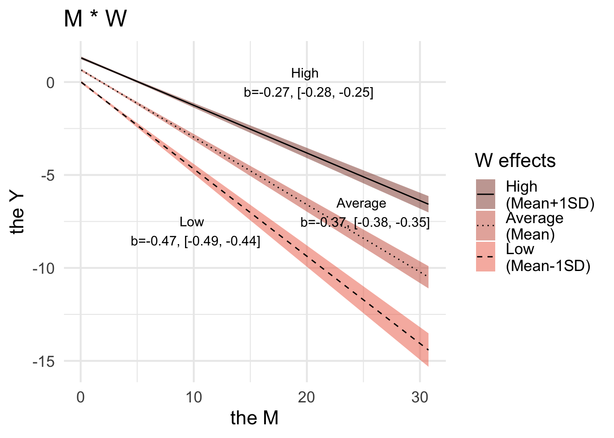

Code
library(tidyverse)
library(brms)
library(bayestestR)
library(rstan)
library(mvtnorm)brmsJW Tsai
March 22, 2024
Goal. In this note, we will demonstrate how to use the output from brms to make (simple slope) testings and plots.
Now we have to make a data set including 4 variables: Y, X, M, and W.
Suppose these four variables follow a multivariate-normal distribution as follows,
Let X is a treatment (binary data), and M is a response time data (lognormal).
\[\begin{equation} \begin{bmatrix} Y \\ X \\M \\W \end{bmatrix} = \text{MVN}\left( \begin{bmatrix} 0 \\0 \\ 0\\ 0 \end{bmatrix}, \begin{bmatrix} 1 & 0.1 & -0.8 & 0.8 \\ 0.1 & 1 & -0.6 & 0\\ -0.8 & -0.6 & 1 & 0.6\\ 0.8 & 0.6 & 0 & 1 \end{bmatrix} \right) \end{equation}\]
Warning in rmvnorm(n = 1000, mean = real_mean, sigma = real_sigma): sigma is
numerically not positive semidefinite ID Y X M W
1 s0001 0.3617174 TRUE 0.4790760 -0.1639895
2 s0002 0.1110080 FALSE 2.0490296 0.2046531
3 s0003 0.6187169 FALSE 2.6247616 1.4401394
4 s0004 1.0347476 TRUE 0.5084054 0.6434533
5 s0005 -1.1477318 FALSE 4.8633851 0.2686688
6 s0006 0.2802449 TRUE 0.1476185 -1.2412565brmsNow we specify the formula as follows (in Bayesian).
\[\begin{align} \text{Likelihood.}\\ Y &\sim N(\mu_y, \sigma_y^2) \\ M &\sim \log N(\mu_m, \sigma_m^2) \\ \mu_y &= \beta_{01} + \beta_x X + \beta_m M + \beta_w W + \beta _{mw}M \cdot W \\ \mu_m &= \beta_{02} + \beta_x X \\ \\ \text{Priors.}\\ \sigma_y^2, \sigma_m^2 & \sim \text{Exp}(1) \\ \beta_{01}, ..., \beta _{x} &\sim N(0,5) \end{align}\]bf1 <- bf(Y~X+M+W+M*W, family = gaussian())
bf2 <- bf(M~X, family = lognormal())
priors <- prior(normal(0,5), class = b, resp = Y) +
prior(normal(0,5), class = b, resp = M) +
prior(exponential(1), class = sigma, resp = Y) +
prior(exponential(1), class = sigma, resp = M)
fit <- brm(
bf1+bf2+set_rescor(FALSE),
data = dat,
cores = 4
)Compiling Stan program...Start sampling Family: MV(gaussian, lognormal)
Links: mu = identity; sigma = identity
mu = identity; sigma = identity
Formula: Y ~ X + M + W + M * W
M ~ X
Data: dat (Number of observations: 1000)
Draws: 4 chains, each with iter = 2000; warmup = 1000; thin = 1;
total post-warmup draws = 4000
Population-Level Effects:
Estimate Est.Error l-95% CI u-95% CI Rhat Bulk_ESS Tail_ESS
Y_Intercept 0.647 0.035 0.579 0.713 1.001 3627 3025
M_Intercept 0.490 0.043 0.405 0.575 1.002 4437 2572
Y_XTRUE -0.164 0.039 -0.241 -0.089 1.000 4362 2630
Y_M -0.366 0.011 -0.387 -0.345 1.000 3287 3126
Y_W 0.604 0.020 0.566 0.644 1.001 3859 3037
Y_M:W 0.100 0.006 0.087 0.112 1.001 3043 2718
M_XTRUE -0.856 0.062 -0.983 -0.737 1.001 4578 2425
Family Specific Parameters:
Estimate Est.Error l-95% CI u-95% CI Rhat Bulk_ESS Tail_ESS
sigma_Y 0.570 0.013 0.545 0.595 1.001 5210 3214
sigma_M 0.962 0.021 0.921 1.006 1.001 5212 3041
Draws were sampled using sampling(NUTS). For each parameter, Bulk_ESS
and Tail_ESS are effective sample size measures, and Rhat is the potential
scale reduction factor on split chains (at convergence, Rhat = 1).Warning: Multivariate response models are not yet supported for tests `rope` and
`p_rope`.Summary of Posterior Distribution M
Parameter | Response | Median | Mean | MAP | 95% CI | pd | Rhat | ESS
-----------------------------------------------------------------------------------------
(Intercept) | M | 0.49 | 0.49 | 0.48 | [ 0.40, 0.57] | 100% | 1.000 | 4416.00
XTRUE | M | -0.86 | -0.86 | -0.85 | [-0.98, -0.74] | 100% | 1.000 | 4528.00
# Fixed effects sigma M
Parameter | Response | Median | Mean | MAP | 95% CI | pd | Rhat | ESS
-------------------------------------------------------------------------------------
sigma | M | 0.96 | 0.96 | 0.96 | [ 0.92, 1.01] | 100% | 0.999 | 5070.00
# Fixed effects Y
Parameter | Response | Median | Mean | MAP | 95% CI | pd | Rhat | ESS
-----------------------------------------------------------------------------------------
(Intercept) | Y | 0.65 | 0.65 | 0.66 | [ 0.58, 0.71] | 100% | 1.000 | 3579.00
XTRUE | Y | -0.16 | -0.16 | -0.16 | [-0.24, -0.09] | 100% | 1.000 | 4349.00
M | Y | -0.37 | -0.37 | -0.36 | [-0.39, -0.34] | 100% | 1.000 | 3257.00
W | Y | 0.60 | 0.60 | 0.60 | [ 0.57, 0.64] | 100% | 1.000 | 3847.00
M:W | Y | 0.10 | 0.10 | 0.10 | [ 0.09, 0.11] | 100% | 1.000 | 3018.00
# Fixed effects sigma Y
Parameter | Response | Median | Mean | MAP | 95% CI | pd | Rhat | ESS
-------------------------------------------------------------------------------------
sigma | Y | 0.57 | 0.57 | 0.57 | [ 0.55, 0.60] | 100% | 1.001 | 5065.00The function hypothesis() can be used to test specific parameter.
Hypothesis Tests for class b:
Hypothesis Estimate Est.Error CI.Lower CI.Upper Evid.Ratio Post.Prob Star
1 Low -0.47 0.02 -0.50 -0.44 NA NA *
2 Medium -0.37 0.01 -0.39 -0.34 NA NA *
3 High -0.27 0.01 -0.28 -0.25 NA NA *
---
'CI': 90%-CI for one-sided and 95%-CI for two-sided hypotheses.
'*': For one-sided hypotheses, the posterior probability exceeds 95%;
for two-sided hypotheses, the value tested against lies outside the 95%-CI.
Posterior probabilities of point hypotheses assume equal prior probabilities.cond_plot$`Y.Y_M:W` |>
ggplot(aes(x = M, y = Y), ) +
geom_ribbon(aes(x = effect1__, y = estimate__, linetype = effect2__,
ymin = lower__, ymax = upper__, fill = factor(effect2__)), alpha = 0.5) +
geom_line(aes(x = effect1__, y = estimate__, linetype = effect2__)) +
scale_fill_manual(name = 'W effects',
values = c("coral4", "coral3", "coral2"),
labels = c("High \n(Mean+1SD)", "Average \n(Mean)", "Low \n(Mean-1SD)"),
) +
scale_linetype_manual(name = 'W effects',
values = c("solid", "dotted", "dashed"),
labels = c("High \n(Mean+1SD)", "Average \n(Mean)", "Low \n(Mean-1SD)")) +
labs(x = "the M",
y = "the Y") +
ggtitle('M * W') +
annotate("text", x=10, y=-8, label= "Low \n b=-0.47, [-0.49, -0.44]") +
annotate("text", x=25, y=-7, label= "Average \n b=-0.37, [-0.38, -0.35]") +
annotate("text", x=20, y=0, label= "High \n b=-0.27, [-0.28, -0.25]") +
theme_minimal(base_size = 16)
@online{tsai2024,
author = {Tsai, JW},
title = {How to Conduct Simple Slope Analysis and Make Plot with
`Brms`},
date = {2024-03-22},
langid = {en}
}